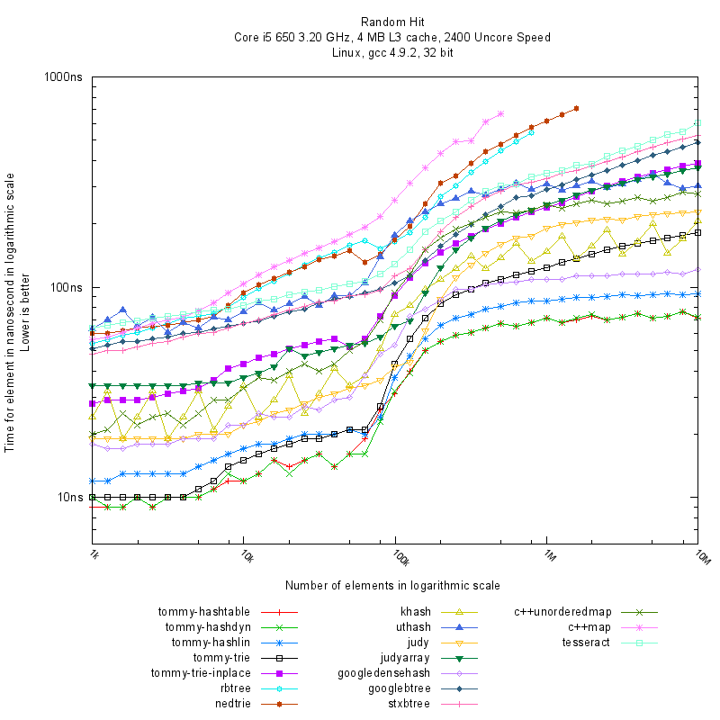
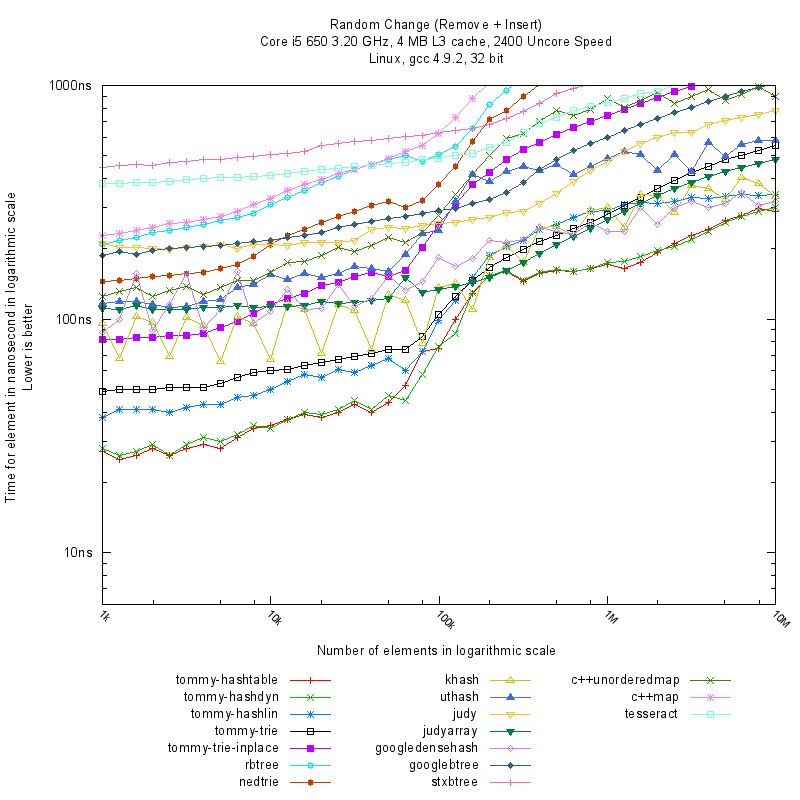

Introduction
Tommy is a C library of array, hashtable, trie, and tree data structures, designed for high performance and providing an easy-to-use interface.
It's faster than all the similar libraries like rbtree, nedtrie, khash, uthash, judy, judyarray, googledensehash, googlebtree, stxbtree, tesseract, libdynamic, concurrencykit and others.
The data structures provided are:
- tommy_list - A doubly linked list. It supports fast sorting with a stable merge sort algorithm.
- tommy_array, tommy_arrayof - A linear array. It doesn't fragment the heap.
- tommy_arrayblk, tommy_arrayblkof - A blocked linear array. It doesn't fragment the heap and it minimizes space occupation.
- tommy_hashtable - A fixed-size chained hashtable.
- tommy_hashdyn - A dynamic chained hashtable.
- tommy_hashlin - A linear chained hashtable. It doesn't have the problem of the delay when resizing and it doesn't fragment the heap.
- tommy_trie - A trie optimized for cache utilization.
- tommy_trie_inplace - A trie completely in-place.
- tommy_tree - A tree to keep elements in order.
- tommy_allocator - An allocator of fixed-size blocks avoiding heap fragmentation.
- Hash functions - Non-cryptographic 32/64-bit hash functions (modified a5hash32 and a5hash) for integers, strings, and byte buffers.
The most interesting are tommy_array, tommy_hashdyn, tommy_hashlin, tommy_trie and tommy_trie_inplace.
The official site of TommyDS is https://www.tommyds.it/.
Use
Tommy provides two main categories of data structures:
Container Selection Guide
| Data Structure | Best Used For | Key Characteristic |
| tommy_array, tommy_arrayof | Dynamic arrays indexed by position | No heap fragmentation; stores pointers or values directly |
| tommy_arrayblk, tommy_arrayblkof | Blocked dynamic arrays | Minimizes memory overhead and address-space usage |
| tommy_list | Doubly linked lists | Intrusive node; O(1) insert/remove at ends; supports sorting |
| tommy_hashdyn | Dynamic hashtable (strings, generic keys) | Fast O(1) average lookup; doubles size dynamically |
| tommy_hashlin | Real-time / low-latency hashtable | Incremental resizing avoids latency spikes and heap fragmentation |
| tommy_hashtable | Fixed-capacity hashtable | Constant bucket allocation without resizing overhead |
| tommy_trie | Integer keys: 32-bit by default, configurable to 64-bit | Cache-optimized trie; uses an external block allocator |
| tommy_trie_inplace | Integer keys: 32-bit by default, configurable to 64-bit | In-place node; requires no external allocator |
| tommy_tree | Ordered collections, range queries | AVL tree ordered by a comparison callback |
Tommy containers do not manage the lifetime of stored elements. Memory allocation (e.g. via malloc()) and deallocation (e.g. via free()) remain the caller's responsibility:
- **Deinitialization (
*_done())**: releases internal container buffers without freeing stored elements.
- **Clearing (
*_clear())**: empties the container, leaving it initialized and immediately reusable without freeing stored elements. Capacity management depends on the container.
Sequential Containers and Arrays
Dynamic arrays (tommy_array, tommy_arrayof, tommy_arrayblk, tommy_arrayblkof) store elements indexed by position (from 0 to size - 1). They grow dynamically without heap fragmentation and do not require any embedded node inside stored elements. tommy_array and tommy_arrayblk store pointers to elements (void*), while tommy_arrayof and tommy_arrayblkof store element values directly.
struct element* elem = malloc(sizeof(struct element));
elem->value = 42;
Array container type.
Definition: tommyarray.h:36
void tommy_array_set(tommy_array *array, tommy_size_t pos, void *element)
Sets the element at the specified position.
Definition: tommyarray.h:134
void * tommy_array_get(tommy_array *array, tommy_size_t pos)
Gets the element at the specified position.
Definition: tommyarray.h:147
TOMMY_API void tommy_array_done(tommy_array *array)
Deinitializes the array.
void tommy_array_grow(tommy_array *array, tommy_size_t size)
Grows the size up to the specified value.
Definition: tommyarray.h:70
TOMMY_API void tommy_array_init(tommy_array *array)
Initializes the array.
struct value_element {
int value;
};
val0->value = 42;
Array container type.
Definition: tommyarrayof.h:45
void * tommy_arrayof_ref(tommy_arrayof *array, tommy_size_t pos)
Gets a reference to the element at the specified position.
Definition: tommyarrayof.h:126
TOMMY_API void tommy_arrayof_init(tommy_arrayof *array, tommy_size_t element_size)
Initializes the array.
TOMMY_API void tommy_arrayof_done(tommy_arrayof *array)
Deinitializes the array.
void tommy_arrayof_grow(tommy_arrayof *array, tommy_size_t size)
Grows the size up to the specified value.
Definition: tommyarrayof.h:81
Doubly linked lists (tommy_list) store pointers to elements sequentially (at head or tail). An element inserted into a list must contain an embedded tommy_node, but elements are not indexed by key.
struct list_element {
int value;
};
struct list_element* elem = malloc(sizeof(struct list_element));
elem->value = 42;
Data structure node.
Definition: tommytypes.h:242
void tommy_list_init(tommy_list *list)
Initializes the list.
Definition: tommylist.h:190
void tommy_list_insert_tail(tommy_list *list, tommy_node *node, void *data)
Inserts an element at the tail of a list.
Definition: tommylist.h:331
Lists can be sorted in-place with tommy_list_sort() using a stable merge sort algorithm:
int list_compare(const void* elem_a, const void* elem_b)
{
const struct list_element* a = elem_a;
const struct list_element* b = elem_b;
if (a->value < b->value)
return -1;
if (a->value > b->value)
return 1;
return 0;
}
TOMMY_API void tommy_list_sort(tommy_list *list, tommy_compare_func *cmp)
Sorts a list.
Associative Containers
Tommy associative containers store pointers to generic elements and provide fast search by key, hash value, or comparison callback. They support multiple elements with the same key, preserving the insertion order of duplicates (semantically equivalent to C++ multimap and unordered_multimap).
Tommy relies on two different callback signatures depending on the container:
- Equality callback (tommy_search_func): used by hashtables. It takes
(const void* arg, const void* elem) and returns 0 if the element matches the search argument, or non-zero (!= 0) if different.
- Three-way comparison callback (tommy_compare_func): used by trees and list sorting. It takes
(const void* elem_a, const void* elem_b) and returns < 0 if a < b, 0 if a == b, and > 0 if a > b.
- Hashtables (tommy_hashtable, tommy_hashdyn, tommy_hashlin): elements embed a tommy_node. Insertion takes the hash of the key (type tommy_hash_t, e.g. computed via tommy_inthash_u32(), tommy_strhash_u32(), or tommy_hash_u32()). Search and remove take an equality callback function (tommy_search_func) returning 0 on match to differentiate elements with matching hash values. tommy_hashlin shares the same API pattern as tommy_hashdyn while resizing incrementally.
struct hash_element {
int value;
};
int hash_compare(const void* arg, const void* elem)
{
return *(const int*)arg != ((const struct hash_element*)elem)->value;
}
struct hash_element* elem = malloc(sizeof(struct hash_element));
elem->value = 1;
int value_to_find = 1;
if (found) {
}
Hashtable container type.
Definition: tommyhashdyn.h:182
tommy_uint32_t tommy_inthash_u32(tommy_uint32_t key)
Reversible 32-bit integer hash function.
Definition: tommyhash.h:141
void * tommy_hashdyn_search(tommy_hashdyn *hashdyn, tommy_search_func *cmp, const void *cmp_arg, tommy_hash_t hash)
Searches an element in the hashtable.
Definition: tommyhashdyn.h:349
TOMMY_API void tommy_hashdyn_done(tommy_hashdyn *hashdyn)
Deinitializes the hashtable.
TOMMY_API void tommy_hashdyn_init(tommy_hashdyn *hashdyn)
Initializes the hashtable.
TOMMY_API void tommy_hashdyn_insert(tommy_hashdyn *hashdyn, tommy_hashdyn_node *node, void *data, tommy_hash_t hash)
Inserts an element in the hashtable.
By default, tommy_hashdyn_insert() allows multiple elements with identical keys. To enforce uniqueness in a single operation, use tommy_hashdyn_insert_unique() (and the corresponding tommy_hashtable and tommy_hashlin functions), which inserts the element only if no match already exists, returning the existing element if present, or the inserted element on successful insertion.
struct trie_element {
};
struct trie_element* elem = malloc(sizeof(struct trie_element));
elem->key = 1;
Allocator of fixed-size blocks.
Definition: tommyalloc.h:27
Trie container type.
Definition: tommytrie.h:207
TOMMY_API void tommy_allocator_done(tommy_allocator *alloc)
Deinitializes the allocator.
TOMMY_API void tommy_allocator_init(tommy_allocator *alloc, tommy_size_t block_size, tommy_size_t align_size)
Initializes the allocator.
#define TOMMY_TRIE_BLOCK_SIZE
Trie block size.
Definition: tommytrie.h:179
TOMMY_API void tommy_trie_init(tommy_trie *trie, tommy_allocator *alloc)
Initializes the trie.
TOMMY_API void tommy_trie_insert(tommy_trie *trie, tommy_trie_node *node, void *data, tommy_key_t key)
Inserts an element in the trie.
void * tommy_trie_search(tommy_trie *trie, tommy_key_t key)
Searches an element in the trie.
Definition: tommytrie.h:319
tommy_size_t tommy_key_t
Type used in indexed data structures to store the key of an element.
Definition: tommytypes.h:219
struct trie_inplace_element {
};
struct trie_inplace_element* elem = malloc(sizeof(struct trie_inplace_element));
elem->key = 1;
Trie node.
Definition: tommytrieinp.h:206
Trie container type.
Definition: tommytrieinp.h:218
void * tommy_trie_inplace_search(tommy_trie_inplace *trie_inplace, tommy_key_t key)
Searches an element in the trie.
Definition: tommytrieinp.h:335
TOMMY_API void tommy_trie_inplace_insert(tommy_trie_inplace *trie_inplace, tommy_trie_inplace_node *node, void *data, tommy_key_t key)
Inserts an element in the trie.
TOMMY_API void tommy_trie_inplace_init(tommy_trie_inplace *trie_inplace)
Initializes the trie.
Both numeric tries provide inclusive and exclusive key bound searches: tommy_trie_search_less(), tommy_trie_search_less_equal(), tommy_trie_search_greater_equal(), and tommy_trie_search_greater(), with corresponding tommy_trie_inplace functions. The less searches select the greatest qualifying key and its last duplicate in insertion order; the greater searches select the smallest qualifying key and its first duplicate. They return the element pointer, or 0 if none, without allocating memory or scanning elements. Search keys must fit within the configured number of bits.
Use tommy_trie_remove_head() or tommy_trie_remove_tail(), and the corresponding tommy_trie_inplace functions, to remove the smallest or greatest key. They select the first or last duplicate in insertion order, respectively, and return the removed element, or 0 if the trie is empty.
struct tree_element {
int value;
};
int tree_compare(const void* elem_a, const void* elem_b)
{
const struct tree_element* a = elem_a;
const struct tree_element* b = elem_b;
if (a->value < b->value)
return -1;
if (a->value > b->value)
return 1;
return 0;
}
struct tree_element* elem = malloc(sizeof(struct tree_element));
elem->value = 1;
struct tree_element value_to_find = { 1 };
Tree container type.
Definition: tommytree.h:146
TOMMY_API void tommy_tree_insert(tommy_tree *tree, tommy_tree_node *node, void *data)
Inserts an element in the tree, allowing duplicate keys.
void tommy_tree_init(tommy_tree *tree, tommy_compare_func *cmp)
Initializes the tree.
Definition: tommytree.h:157
void * tommy_tree_search(tommy_tree *tree, const void *data)
Searches an element in the tree.
Definition: tommytree.h:447
To search with an arbitrary search key type rather than a full element, use tommy_tree_search_compare().
Like numeric tries, trees provide inclusive and exclusive key bound searches: tommy_tree_search_less(), tommy_tree_search_less_equal(), tommy_tree_search_greater_equal(), and tommy_tree_search_greater(), with custom comparator variants (e.g. tommy_tree_search_greater_equal_compare()) and node lookup counterparts (tommy_tree_find_greater_equal(), etc.). Combining tommy_tree_find_greater_equal() with tommy_tree_next() enables efficient range scans over ordered elements.
API Conventions: Elements vs Nodes
Tommy associative containers follow a consistent naming convention to distinguish functions that return user elements from functions that return container nodes:
| Operation Family | Prefix / Name | Return Type | Typical Use |
| Element lookup | search* | void* (data) | High-level point queries returning the element directly (or 0) |
| Element removal | remove* | void* (data) | Searches by key/callback and removes matching element |
| Direct node removal | remove_existing* | void* (data) | Unlinks a known node directly without search (O(1) in lists/hashtables) |
| Unique insertion | insert_unique* | void* (data) | Inserts only if absent; returns existing element if present, or the inserted element |
| Node lookup | find* | tommy_*_node* | Locates the node, enabling iteration or metadata inspection |
| Bucket lookup | bucket* | tommy_*_node* | Returns head node of hash collisions or trie leaves |
| Positional navigation | head*, tail*, next*, prev* | tommy_*_node* | Linear and ordered traversal over container nodes |
Use search() when you only need the element pointer. Use find() when you need to inspect the node itself or start a traversal from the matching position.
For element removal, use remove() when you only have a search key (performing a lookup), or remove_existing() when you already hold the node pointer (avoiding lookup overhead).
while (node) {
struct tree_element* elem = node->
data;
}
void * data
Pointer to the element containing the node.
Definition: tommytypes.h:260
tommy_tree_node * tommy_tree_next(tommy_tree_node *node)
Gets the node following the specified one in tree order.
Definition: tommytree.h:257
tommy_tree_node * tommy_tree_find_greater_equal(tommy_tree *tree, const void *data)
Finds a node in the tree with key greater or equal than the specified one.
Definition: tommytree.h:496
Traversal and Iteration
Tommy provides two mechanisms to traverse container elements:
- Callback traversal (foreach): almost all containers (lists, hashtables, tries, and trees) provide
foreach() and foreach_arg() functions to iterate over all stored elements using a callback function. The callback may safely deallocate the current element (e.g. calling free()), but adding or removing elements from inside the callback is not allowed.
void print_element(void* arg, void* elem)
{
struct hash_element* o = elem;
printf("%s: %d\n", (const char*)arg, o->value);
}
TOMMY_API void tommy_hashdyn_foreach_arg(tommy_hashdyn *hashdyn, tommy_foreach_arg_func *func, void *arg)
Calls the specified function with an argument for each element in the hashtable.
- Explicit iteration:
- Lists: traverse forward using head() and following
next, or backward using tail() and prev().
- Trees: traverse in order using head() and next(), or in reverse using tail() and prev(). Traversal may also begin at any intermediate position returned by find() or key bound searches like find_greater_equal().
- Tries: traverse in key order using head() and next(), or in reverse using tail() and prev(). Traversal may also begin at any intermediate position returned by find() or key bound searches like find_greater_equal().
- Hashtables: traverse all elements in internal container order forward using head() and next(), or backward using tail() and prev(). Elements in the same bucket can also be traversed using bucket() and following
next.
- Arrays: access elements in an explicit
for loop by index from 0 to size() - 1.
- Trees, tries, and hashtables can also be drained directly into a tommy_list without memory allocations using to_list(). Trees and tries transfer elements in sorted order, while hashtables transfer elements in bucket order, enabling sequential batch processing or list sorting.
- To iterate explicitly over all elements in global insertion order (rather than the container's internal or sorted order), you can insert elements into both an associative container and a tommy_list (see Multi-Indexing: Searching Elements in Multiple Ways).
Features
Tommy is fast and easy to use.
Tommy is portable to all platforms and operating systems.
Tommy associative containers support multiple elements with the same key.
Tommy associative containers keep the original insertion order of elements with equal keys.
Tommy is released with the 2-clause BSD license.
See the Tommy Design page for more details and limitations.
Performance
Here you can see some timings comparing with other notable implementations. The Hit graph shows the time required for searching random elements with a key. The Change graph shows the time required for searching, removing and reinserting random elements with a different key value.
Times are expressed in nanoseconds for each element, and lower is better.
To have some reference numbers, you can check Latency numbers every programmer should know.
A complete analysis is available in the Tommy Benchmarks page.

